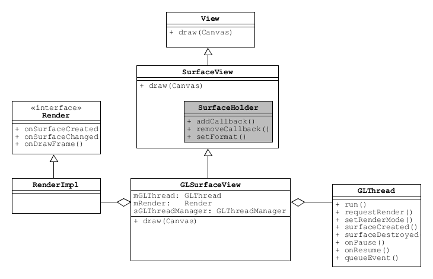
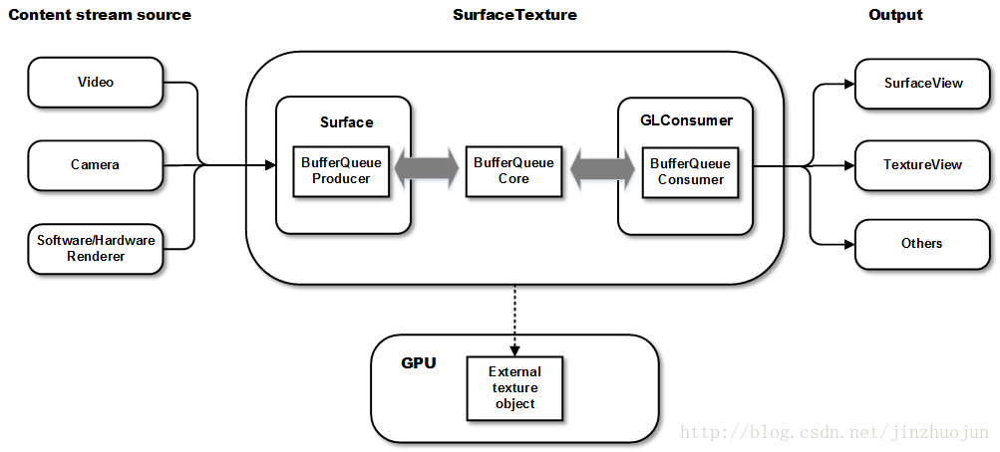
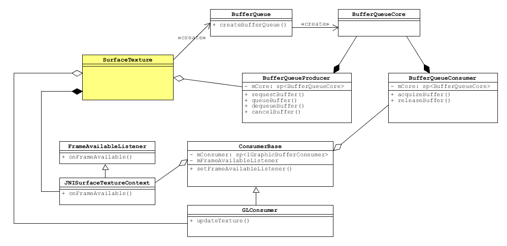

reference: ariesjzj’s blog

Captures frames from an image stream as an OpenGL ES texture.
Camera2 -.
\
`--> +-------+ +--------------+ updateTexImage()
MediaPlayer ---> |Surface| <===> |SurfaceTexture| ---------> GPU Texture
.--> +-------+ +--------------+
/
MediaCodec /

VideoDumpView (GLSurfaceView demo)
PATH: frameworks/base/media/tests/MediaDump/src/com/android/mediadump
┌──────────────────┐
┌───────────────────┐ │SurfaceTexture │
┌─────────────┐ │ Surface │ │ ┌──────────────┐ │
│ MediaPlayer ├────>BufferQueueProducer├───┼─> BufferQueue │ │
└─────────────┘ └───────────────────┘ │ └──────────────┘ │
└─────────┬────────┘
│
│onDrawFrame()
│
┌─────────v────────┐
│ │
│ GLSurfaceView │
│ │
└──────────────────┘ LiveCameraActivity (TextureView demo)
// 1. new a TextureView and make it as current root view
TextureView textureView = new TextureView(this);
setContentView(textureView);
// 2. override onSurfaceTextureAvailable() and get the SurfaceTexture
public void onSurfaceTextureAvailable(
SurfaceTexture surface, int width, int height) {
mSurfaceTexture = surface;
if (!PermissionHelper.hasCameraPermission(this)) {
PermissionHelper.requestCameraPermission(this, false);
} else {
startPreview();
}
}
// 3. set the SurfaceTexture as the camera output
mCamera.setPreviewTexture(mSurfaceTexture);